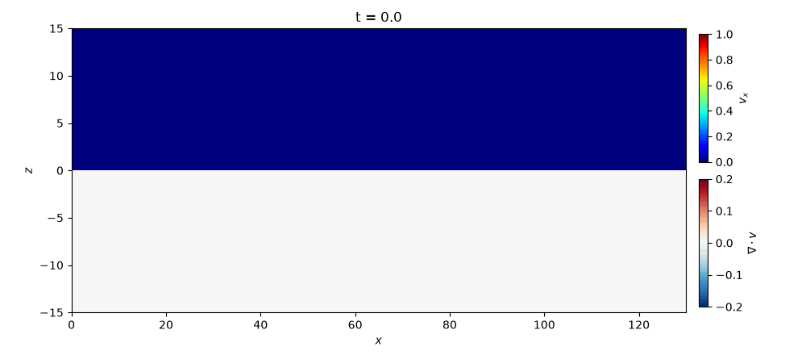

2D MHD Test: Petschek Reconnection
This problem investigates the shock structure of the plasmoid that forms at the tip of the outflow (jet) in magnetic reconnection in a low-beta plasma. We use the setup of run 2 (\(\beta_\mathrm{up} = 0.2\)) in [Zenitani, 2015].
When the resistivity is increased only near the X-point, Petschek-type fast reconnection occurs, and an outflow forms between the Petschek slow shocks extending obliquely from the X-point. This outflow sweeps up the plasma and the reconnected magnetic field lines, and forms one large plasmoid at the tip of the jet. At low beta, the speed of the outflow pushing the plasmoid (about the upstream Alfvén speed) exceeds the sound speed, so several shocks form around the plasmoid. Whether these shocks and discontinuities can be captured is the highlight of this test problem.
The resistivity is given by the source term mhd::ResistiveSource. A diffusion term due to the resistivity is added to the induction equation, and the corresponding energy flux is added to the equation for the total energy \(e\) (in Gaussian units). The Joule heating goes into the internal energy.
Location
demo/mhd2d_reconnection/
Geometry
\(0 \leq x \leq 150\)
\(0 \leq z \leq 30\)
As in the paper, we solve in the \(x\)-\(z\) plane (\(x\): outflow direction, \(z\): inflow direction, \(y\): out-of-plane direction). We place the X-point at the origin and, using symmetry, compute only the first quadrant. The default grid is \(1500 \times 300\) (grid spacing \(0.1\)). The paper computes the region \([0, 200] \times [0, 150]\) with \(12000 \times 9000\) grid points (grid spacing \(1/60\)), so our domain is smaller and the resolution is lower.
Initial Conditions
The equations below are written in the units of the paper. MISO uses Gaussian units, so the magnetic field is multiplied by \(\sqrt{4\pi}\) in the code. The ratio of specific heats is \(\gamma = 5/3\).
The initial state is a Harris current sheet.
Here \(\beta_\mathrm{up} = 0.2\) is the upstream plasma beta. To start the reconnection, we add the following perturbation to the vector potential \(A_y\):
where \(a = 0.06\). From \(\delta \bm{B} = \nabla \times (\delta A_y \bm{e}_y)\), we obtain
The resistivity is localized near the origin.
Here \(\eta_0 = 1/1000\) and \(\eta_1 = 1/60\). \(\beta_\mathrm{up}\), \(\eta_0\), \(\eta_1\), and \(a\) can be changed in the reconnection section of config.yaml.
Boundary Conditions
At all boundaries, the density and internal energy are symmetric (even). The parity of the other variables is given in the table below.
\(x = 0\), \(x = 150\), \(z = 0\): mirror-symmetric boundaries. The velocity normal to the boundary, the magnetic field parallel to the boundary (a pseudovector), and the GLM potential \(\psi\) (proportional to \(\nabla \cdot \bm{B}\)) are antisymmetric (odd).
\(z = 30\): a perfectly conducting wall. The velocity and magnetic field normal to the boundary are antisymmetric.
Boundary |
\(v_x\) |
\(v_y\) |
\(v_z\) |
\(B_x\) |
\(B_y\) |
\(B_z\) |
\(\psi\) |
|---|---|---|---|---|---|---|---|
\(x = 0\), \(x = 150\) |
odd |
even |
even |
even |
odd |
odd |
odd |
\(z = 0\) |
even |
even |
odd |
odd |
odd |
even |
odd |
\(z = 30\) |
even |
even |
odd |
even |
even |
odd |
even |
Results
A Python script for visualization is provided. The movie of the results and the figure at the final time are saved in demo/mhd2d_reconnection/figs.
cd demo/mhd2d_reconnection
python plot_data.py
As in Fig. 1 of [Zenitani, 2015], we plot \(v_x\) in the upper half (\(z > 0\)) and \(\nabla \cdot \bm{v}\) in the lower half with \(z\) flipped. For readability, the \(z\) direction is stretched by a factor of 2. Shocks are compressive layers, so they appear as lines of \(\nabla \cdot \bm{v} < 0\) (blue). The paper shows the Petschek slow shocks, the reverse fast shocks behind the plasmoid, and the vertical slow shocks behind and in front of the plasmoid.
The movie below shows the time evolution from \(t = 0\) to \(250\), computed with the grid spacing reduced to 1/3 of the default (\(0.033\), \(4500 \times 900\) grid points). The shock width is 3 to 4 grid cells, so at the default resolution (grid spacing \(0.1\)) the shocks look thicker. The paper (grid spacing \(1/60\)) uses an even finer grid.
